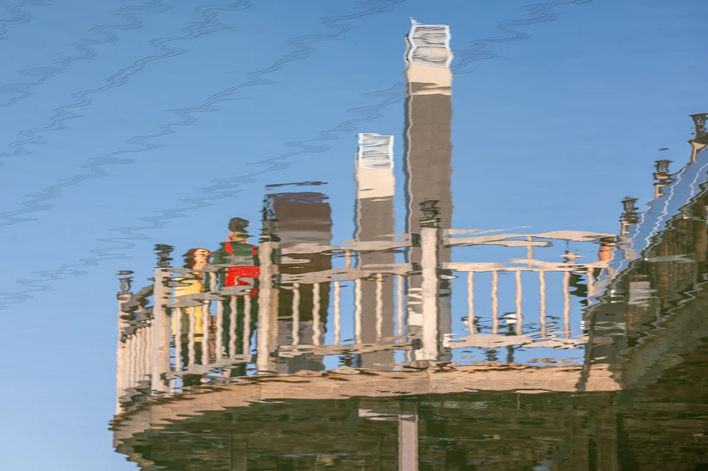

Başlık, ölümünden sonra yapay zekânın yazdığı bir betimlemedir
3D sergide görüntüle Özgün dosyayı indir

Kaynak gösterimi
Yumok (流木) Lee Dong-joo, “Sudaki Seyir Kulesi”, 2018. CC BY 4.0, seungheon.com
Yumok'un Su Işığı Fotoğrafları
Tapjeong Gölü, Nonsan · 2018
Yansıma
Başlık, ölümünden sonra yapay zekânın yazdığı bir betimlemedir
3D sergide görüntüle Özgün dosyayı indir
Yumok (流木) Lee Dong-joo, “Sudaki Seyir Kulesi”, 2018. CC BY 4.0, seungheon.com